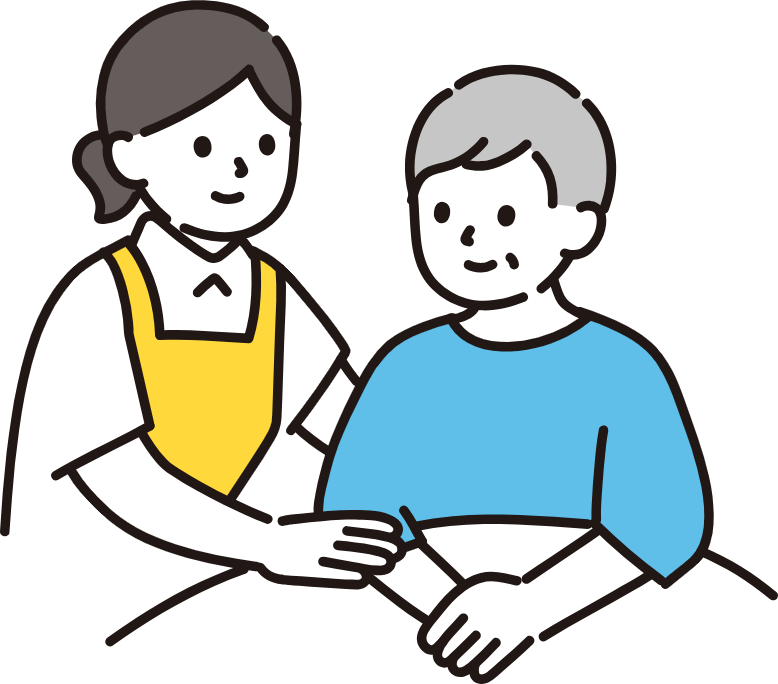
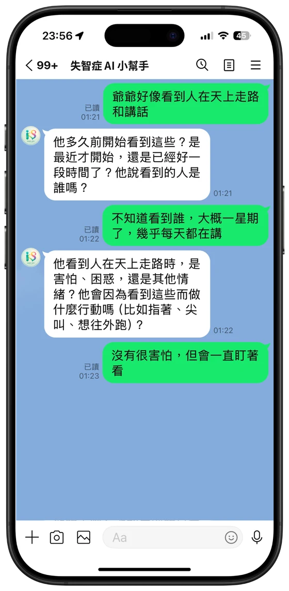
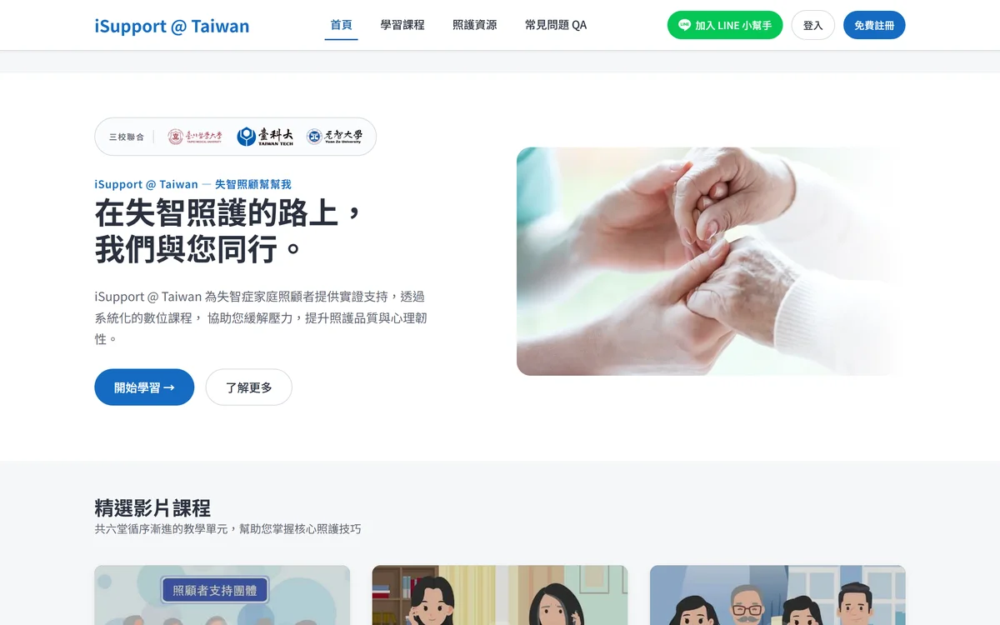

01｜約 5 分鐘
：填寫篩選問卷
先回答幾個基本問題，讓研究團隊確認是否符合參與條件。填寫問卷不代表已經正式加入研究。
招募中｜招募截止：2026/11/30
iSupport 是專為失智家庭照顧者打造的知識 AI 服務，包含失智症 AI 小幫手與 iSupport@Taiwan 失智症幫幫我網站。
遇到當下不知道怎麼處理的照顧問題，可以透過 LINE 即時對談；想進一步了解照顧方法或尋找合適服務，可以到網站查看較完整的建議與資訊。
我們正在邀請失智症家庭照顧者試用這項服務。您的使用經驗，會幫助研究團隊了解它是否真的符合日常照顧的需要。

家人拒絕洗澡、突然焦躁，或一直說要回家時，您可能只想先知道：現在該怎麼做？

長照服務、醫療與民間資源分散在不同單位。您可能得自己找窗口、問資格，再一家家聯絡。
剛開始照顧時，您可能想知道家人為什麼會有這些行為、可以怎麼處理，以及有哪些資源能幫忙。
家庭照顧者使用
不用下載新 App，在 LINE 上描述家人的狀況，就能得到具體的照顧建議，內容由醫療照護專家參與審閱。

家庭照顧者使用
從生活中的照顧需要出發，查看較完整、有系統的照顧建議。

兩項工具各自獨立，資料不會互相同步。請依當下的需要選擇：
我們正在招募失智症家庭照顧者，試用兩項工具約 1 個月。我們想了解，這兩項工具能不能讓家庭照顧者更快找到方法、服務與下一步，並更有信心面對日常照顧。
填寫篩選問卷不代表已經加入研究。符合條件後，研究團隊會再與您聯繫、說明研究內容；您同意並簽署同意書後，才會正式加入。
我們想了解家庭照顧者會在什麼情況下分別使用兩項工具，以及使用一段時間後，照顧知識、照顧信心與照顧韌性是否有所變化。
研究團隊由國立臺灣科技大學、臺北醫學大學與元智大學共同組成。
本研究已通過台大研究倫理審查（IRB 審查編號：202508EM031）
先回答幾個基本問題，讓研究團隊確認是否符合參與條件。填寫問卷不代表已經正式加入研究。
符合條件後，研究團隊會與您聯繫，說明研究內容並回答問題。
您同意參加並簽署知情同意書後，才會正式加入研究。接著填寫研究開始前問卷（前測），再由研究團隊分派至介入組或等待介入組。
完成後測問卷後，進行一次約 1 小時的個別訪談，可以選擇面談或視訊。
招募中｜招募截止：2026/11/30
填寫約需 5 分鐘。研究團隊會於兩週內通知篩選結果並說明研究內容。填寫問卷不代表已經正式加入研究；您同意並簽署知情同意書後，才會正式加入。
→ 填寫篩選問卷如果身邊有正在照顧失智家人的親友，也歡迎把本頁分享給他們。